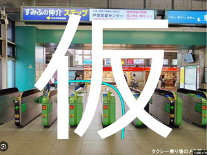
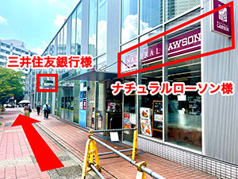
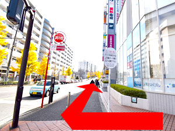
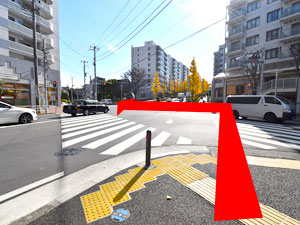
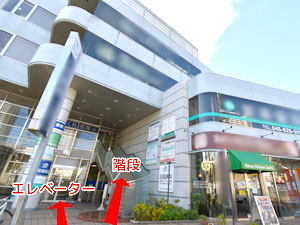

交通アクセス
東戸塚整形外科リウマチ科
〒244-0801 神奈川県横浜市戸塚区品濃町513-7 清光ビル2階
当院までの道のり
電車でお越しの方
JR横須賀線「東戸塚」駅 東口より徒歩3分
-

改札を出て左手側「東口」から地上に下ります。 -

地上に下りたら、右方向に進みます。
右手側にナチュラルローソン、三井住友銀行を見ながら、そのまま前進します。 -

しばらく進むと交差点に出ますが、横断歩道は渡らずに右方向に進みます。 -

直進し、最初の交差点を斜め向かい側に渡ります。 -

しばらく直進すると右手側に見えてくる建物の2階に当院がございます。
外の階段、もしくは建物内のエレベーターで2階へお越しください。
バスでお越しの方
バス停「品濃町」下車 徒歩1分
車でお越しの方
当院ビルの裏に専用駐車場が2台ございます。